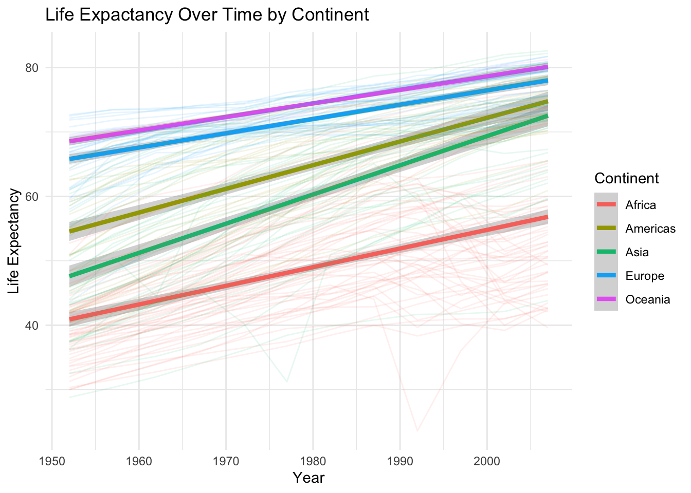

library(tidyverse)── Attaching core tidyverse packages ──────────────────────── tidyverse 2.0.0 ──
✔ dplyr 1.1.4 ✔ readr 2.1.5
✔ forcats 1.0.0 ✔ stringr 1.5.1
✔ ggplot2 3.5.2 ✔ tibble 3.3.0
✔ lubridate 1.9.4 ✔ tidyr 1.3.1
✔ purrr 1.1.0
── Conflicts ────────────────────────────────────────── tidyverse_conflicts() ──
✖ dplyr::filter() masks stats::filter()
✖ dplyr::lag() masks stats::lag()
ℹ Use the conflicted package (<http://conflicted.r-lib.org/>) to force all conflicts to become errorslibrary(lubridate)
library(lme4)Loading required package: Matrix
Attaching package: 'Matrix'
The following objects are masked from 'package:tidyr':
expand, pack, unpacklibrary(car)Loading required package: carData
Attaching package: 'car'
The following object is masked from 'package:dplyr':
recode
The following object is masked from 'package:purrr':
somelibrary(gapminder)
data("gapminder")
glimpse(gapminder)Rows: 1,704
Columns: 6
$ country <fct> "Afghanistan", "Afghanistan", "Afghanistan", "Afghanistan", …
$ continent <fct> Asia, Asia, Asia, Asia, Asia, Asia, Asia, Asia, Asia, Asia, …
$ year <int> 1952, 1957, 1962, 1967, 1972, 1977, 1982, 1987, 1992, 1997, …
$ lifeExp <dbl> 28.801, 30.332, 31.997, 34.020, 36.088, 38.438, 39.854, 40.8…
$ pop <int> 8425333, 9240934, 10267083, 11537966, 13079460, 14880372, 12…
$ gdpPercap <dbl> 779.4453, 820.8530, 853.1007, 836.1971, 739.9811, 786.1134, …#data prep
gapminder_prep <- gapminder %>%
mutate(
year_centered = year - 1952,
continent = factor(continent)
)
# centered year for intuitive understanding
glimpse(gapminder_prep)Rows: 1,704
Columns: 7
$ country <fct> "Afghanistan", "Afghanistan", "Afghanistan", "Afghanista…
$ continent <fct> Asia, Asia, Asia, Asia, Asia, Asia, Asia, Asia, Asia, As…
$ year <int> 1952, 1957, 1962, 1967, 1972, 1977, 1982, 1987, 1992, 19…
$ lifeExp <dbl> 28.801, 30.332, 31.997, 34.020, 36.088, 38.438, 39.854, …
$ pop <int> 8425333, 9240934, 10267083, 11537966, 13079460, 14880372…
$ gdpPercap <dbl> 779.4453, 820.8530, 853.1007, 836.1971, 739.9811, 786.11…
$ year_centered <dbl> 0, 5, 10, 15, 20, 25, 30, 35, 40, 45, 50, 55, 0, 5, 10, …######## Question 1: Does the rate of life expectancy increase over time differ between continents.
f1 <- ggplot(gapminder_prep, aes(x = year, y = lifeExp, color = continent)) +
geom_smooth(method = "lm", se = TRUE, linewidth = 1.5) +
geom_line(aes(group = country), alpha = 0.1) +
labs(
title = "Life Expactancy Over Time by Continent",
x = "Year",
y = "Life Expectancy",
color = "Continent"
) +
theme_minimal()
print(f1)`geom_smooth()` using formula = 'y ~ x'
#Running the model
model_1 <- lmer(
lifeExp ~ year_centered * continent + (1| country),
data = gapminder_prep
)
summary(model_1)Linear mixed model fit by REML ['lmerMod']
Formula: lifeExp ~ year_centered * continent + (1 | country)
Data: gapminder_prep
REML criterion at convergence: 9420.5
Scaled residuals:
Min 1Q Median 3Q Max
-6.6541 -0.4220 0.0829 0.5630 2.3337
Random effects:
Groups Name Variance Std.Dev.
country (Intercept) 42.20 6.496
Residual 10.59 3.254
Number of obs: 1704, groups: country, 142
Fixed effects:
Estimate Std. Error t value
(Intercept) 40.903275 0.933620 43.811
year_centered 0.289529 0.007547 38.362
continentAmericas 13.645061 1.638496 8.328
continentAsia 6.700762 1.498382 4.472
continentEurope 24.897277 1.543535 16.130
continentOceania 27.640443 4.851231 5.698
year_centered:continentAmericas 0.078122 0.013245 5.898
year_centered:continentAsia 0.163593 0.012113 13.506
year_centered:continentEurope -0.067597 0.012478 -5.417
year_centered:continentOceania -0.079257 0.039217 -2.021
Correlation of Fixed Effects:
(Intr) yr_cnt cntnntAm cntnntAs cntnnE cntnnO
year_centrd -0.222
cntnntAmrcs -0.570 0.127
continentAs -0.623 0.139 0.355
continntErp -0.605 0.134 0.345 0.377
continntOcn -0.192 0.043 0.110 0.120 0.116
yr_cntrd:cntnntAm 0.127 -0.570 -0.222 -0.079 -0.077 -0.024
yr_cntrd:cntnntAs 0.139 -0.623 -0.079 -0.222 -0.084 -0.027
yr_cntrd:cE 0.134 -0.605 -0.077 -0.084 -0.222 -0.026
yr_cntrd:cO 0.043 -0.192 -0.024 -0.027 -0.026 -0.222
yr_cntrd:cntnntAm yr_cntrd:cntnntAs yr_c:E
year_centrd
cntnntAmrcs
continentAs
continntErp
continntOcn
yr_cntrd:cntnntAm
yr_cntrd:cntnntAs 0.355
yr_cntrd:cE 0.345 0.377
yr_cntrd:cO 0.110 0.120 0.116anova <- Anova(model_1, type = 2)
print(anova)Analysis of Deviance Table (Type II Wald chisquare tests)
Response: lifeExp
Chisq Df Pr(>Chisq)
year_centered 5091.95 1 < 2.2e-16 ***
continent 269.51 4 < 2.2e-16 ***
year_centered:continent 336.77 4 < 2.2e-16 ***
---
Signif. codes: 0 '***' 0.001 '**' 0.01 '*' 0.05 '.' 0.1 ' ' 1